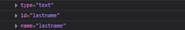
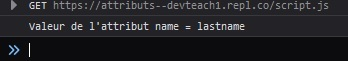
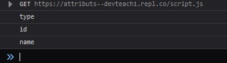
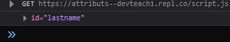
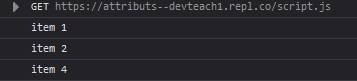
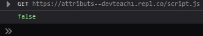
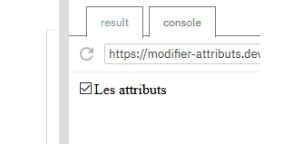
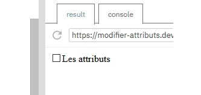

Pour aller plus loin dans le parcours du DOM, nous allons voir que l'API DOM nous met à disposition des propriétés et méthodes pour accéder aux attributs des éléments sélectionnés. Cela nous permettra, par exemple, de filtrer le résultat de notre recherche.
Cette propriété nous permet d'accéder à une liste d'attributs déclarés dans le nœud spécifié. Nous l'utiliserons pour parser l'ensemble des attributs d'une balise HTML.
See the Pen Untitled by OpenSpirit (@OpenSpirit) on CodePen.
attributes nous permet d'obtenir tous les attributs du champ du formulaire. Grâce à une boucle, nous pouvons accéder à chacun d'entre eux.
Cette méthode nous renvoie la valeur de l'attribut passé en paramètre, s'il existe dans le DOM. Nous l'utiliserons pour accéder à la valeur d'un attribut en particulier d'un élément.
See the Pen Untitled by OpenSpirit (@OpenSpirit) on CodePen.
getAttribute nous permettra de filtrer les résultats d'une recherche dans le DOM. Par exemple, nous pourrons sélectionner toutes les balises input d'un formulaire, sauf celles qui possèdent l'attribut class="info".
Cette méthode nous renvoie une liste des noms d'attributs d'un élément du DOM.
See the Pen Untitled by OpenSpirit (@OpenSpirit) on CodePen.
getAttributeNames() nous permettra de vérifier qu'un élément possède bien un attribut, par exemple qu'une balise input possède bien l'attribut type.
Cette méthode nous renvoie le nœud d'attribut spécifié en paramètre. Nous l'utiliserons pour accéder à un élément attribut en particulier dans le DOM.
See the Pen Untitled by OpenSpirit (@OpenSpirit) on CodePen.
Nous obtenons le nœud attribut id correspondant à la balise input avec l'ID #lastname.
Cette méthode nous renvoie une valeur booléenne (vrai ou faux) si l'élément possède le nom d'attribut passé en paramètre. Nous l'utiliserons pour filtrer notre résultat de recherche dans le DOM ou bien pour associer des scripts à certains éléments et d'autres non.
See the Pen Untitled by OpenSpirit (@OpenSpirit) on CodePen.
Nous obtenons tous les éléments correspondant aux balises li, sauf celle qui n'a pas l'attribut class.
Cette méthode nous renvoie une valeur booléenne (vrai ou faux) si l'élément possède au moins un attribut ou aucun. Là aussi, nous pourrons l'utiliser pour filtrer nos résultats de recherche dans le DOM et pour associer ou non des scripts à certains éléments.
See the Pen Untitled by OpenSpirit (@OpenSpirit) on CodePen.
La balise ul ne possède aucun attribut : hasAttributes nous renvoie donc la valeur false.
L'un des intérêts de pouvoir parcourir et sélectionner les attributs du DOM est d'en ajouter, de les modifier ou les supprimer. Pour ce faire, nous pourrons utiliser deux méthodes de l'API : setAttribute('name', 'valeur') et removeAttribute('name').
setAttribute nous permettra d'ajouter un nouvel attribut ou de modifier un attribut existant en précisant en paramètres le nom de l'attribut, puis sa valeur.
See the Pen Untitled by OpenSpirit (@OpenSpirit) on CodePen.
removeAttribute nous permettra de supprimer un attribut en précisant en paramètre son nom.
See the Pen Untitled by OpenSpirit (@OpenSpirit) on CodePen.
L'accès aux attributs se fait à partir d'un élément sélectionné dans le DOM :